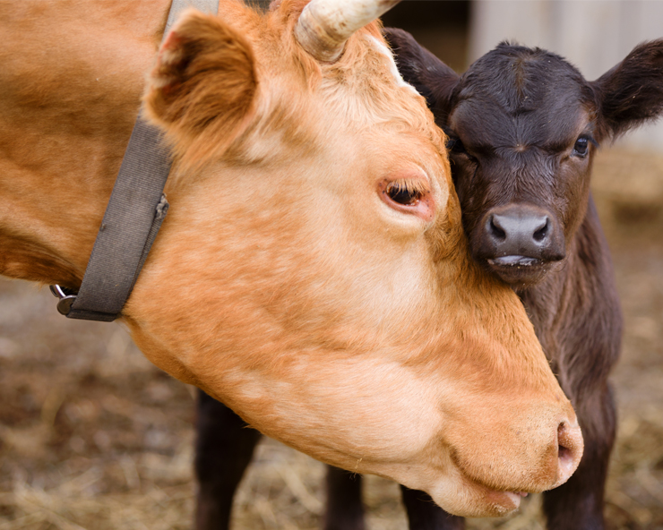
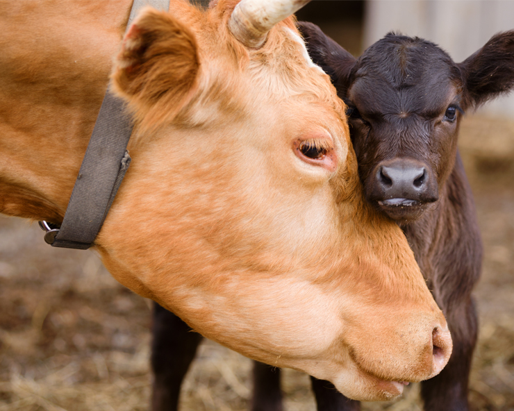

RamGan The Farmer began in 1985 when John and Mary Smith purchased 25 acres of land with a dream of growing food the way nature intended. What started as a small family garden quickly grew into a thriving farm as neighbors began requesting our fresh vegetables, eggs, and dairy products.
For three generations, our family has worked this land with a deep respect for natural processes and a commitment to sustainable agriculture. We believe that healthy soil creates healthy plants, healthy animals, and ultimately, healthy people.
Today, RamGan spans 75 acres and includes vegetable fields, fruit orchards, free-range chicken pastures, and dairy cows. While we've grown over the years, our core values remain the same: to produce nutritious food in harmony with nature and to share the bounty of our land with our community.
 
